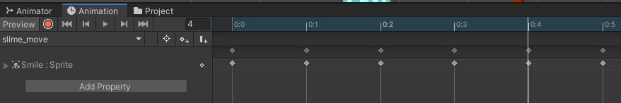
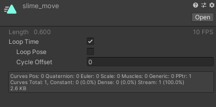
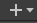

In this section we are going to learn about animations. The animations in Unity can be used to do many things, in fact you can even use nothing but animations to make a complex boss. This is helpful because it eliminates the need to write an enemy boss AI. Brackeys - How to make a BOSS in Unity! is a video that will walk you through boss creation with animations. I implore you to watch the video. The first thing that we are going to cover in this section is the animator component.
There are two windows that you are going to need if you are working with animations. To open these windows go to Window->Animation and you will see one called Animator and another called Animation, open both of these and dock them somewhere in the editor.
If you have an object in the heirarchy selected and have the Animation window open there will be a button that says Create. As you may recall from earlier if you add a clip right now to this object the Animator component will be added to the object automaticaly. One thing you should make a habbit out of is creating a folder called Animations and sub folders inside that foreach object that you animate.
For this section we are going to learn how to make an animation clip. This is going to make our game object look and feel more dynamic to the player. In this example we are going to animate the little green guy to the right, its only going to have one animation that will show him expanding and contracting verticaly.
NOTE: I will not be covering how to setup the project to start
animating the slim character.
The first thing we are going to do is open the two required windows
Now that the sprites are all setup, you need to click on the little gray arrow on the right side of the sprite sheet and select all the images. Make sure you have the slim object selected and drag the sprites into the Animation window and drop them there. This will create Key Frames each one will be responsible for one of the sprites. You will want to space them all apart by one like so
If you navigate around in the Project folder and find the slime_move clip that was just made click on it and you will find that it tells you the length of the animation in frames and its FPS. You will also see a Loop Time check box you this will need to be checked for all animations that you want to play multiple times otherwise the animation will play one time then end.
Here we are going to cover how to transition from one animation to another. This is all handled in the Animator window.
NOTE: project setup will not be covered here
In the Animator window you will see  if you click on it you will be presented with a small dropdown of primitives. We can add these to the animation to be used as conditions that need to be met in order for a transition to take place. There will be a node for each of the clips in this window as well.
When a node is orange that means that it is the default animation that will play. If you pay attention to the arrows coming and going from each node you will propably assume that these are pointing to the animations that each clip can transition into. I.e. Player_idle can go to Player_Run and Player_JetPack where as Player_Run can transition into any of the other four states. But we need to add some conditions to these transitions so the Animator knows when to switch animations. This is were Parameters come into play.
For this characters Animator we only need four parameters ( VelocityX, VelocityY, Grounded, JetPack) the first two are floats and the other two are or type bool. To start useing these for transition one would click on one of the arrows for example the one going from Player_idle to Player_Run they would see a section called Conditions all they would have to do is add one. In this case we want the VelocityX param to be greater than 0.01, if this condition is met then the Animator will start playing the run animation for the player. Now we need a script that will pass values into these parameters.
For this project I created the script PlayerAnimController, the implementation is not optimal but will get the point accross. This script works by taking values from other objects and passing them into the Animator component. To set the values of parameters in the Animator you will need access to the Animator component on the game object. Below is an image of the script